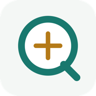

Immutable revisions
Natural-language changes create a new reviewed version. Prior runs remain intact.

OpsWitness Alpha Preview GitHubLOCAL-FIRST AI WORKFORCE
Describe a goal. Review the team and workflow. Run it again with version history, approvals, files, and evidence - on your own Mac.
macOS 14+ candidate / Python 3.12 / Apache-2.0 / package validation in progress
Your work stays local. OpsWitness is a local Mac application, not a hosted SaaS. This public website contains product information, source, release status, and feedback links only.
CURRENT AVAILABILITY
The Community Alpha release candidate is still completing its reproducibility and durability checks. You can inspect the source and product today. A verified wheel, checksums, SBOM, and attestation will appear together on GitHub Releases when the gate passes.
Check release statusONE SIMPLE LOOP
OpsWitness sits above your AI runtimes. It makes the team, process, decisions, and results visible without asking you to operate the underlying control planes.
Start from a goal, a proven template, or an earlier planning conversation.
See roles, reporting lines, stages, model choices, and human checkpoints.
Execution starts only after an immutable plan version is reviewed and confirmed.
Open readable results, inspect evidence, rerun, fork, or revise the architecture.
THE ACTUAL PRODUCT
These are real OpsWitness screens using synthetic demonstration data.
BUILT FOR REPEATABILITY
Natural-language changes create a new reviewed version. Prior runs remain intact.
Each execution keeps its process, inputs, decisions, results, and status.
Artifacts are content-addressed and linked to the run that produced them.
Use automatic mode for routine work or require approval at sensitive checkpoints.
Prepare a proven team and workflow in one click, then review before dispatch.
Agents propose lessons; only approved, versioned memory can affect new planning.
HONEST ALPHA BOUNDARIES
COMMUNITY ALPHA AVAILABILITY
OpsWitness will be distributed through a GitHub prerelease, not PyPI. Until that prerelease exists, this page will not offer an unverified download.
The first package targets macOS 14+ with Python 3.12. Start with synthetic or non-critical work; durability remains experimental in Alpha.
The download button will appear only after the exact public build passes the release checks. No email signup or hosted account is required.
HELP SHAPE THE ALPHA
Before the package is posted, you can review the screens and source or request a workflow. After release, the most useful reports describe the goal, point of friction, and whether plan, history, and final result were easy to find.